本轮证据边界（2026-11-16）：本地已找到并只读核验 2026-11-10 保存的权威
evidence/final_npcap/capture.pcapng，共584帧。S01—S06是本轮对历史文件新拍的真实 Wireshark 4.6.9 窗口，不是新抓网络流量。原图21张在解压基线中保留；交付副本中的图20对含 Set-Cookie 的字节区做明确遮挡，其余20张原样复制。原始抓包不公开打包；文件指纹及选定字段见 登记表 和evidence/。帧号和流号只对该文件有效。
本教程沿用原零基础版19处关键图片，按八项模板逐图补全，并加入6张真实补图。先读图1学操作，再读ARP/ICMP/TCP/分片，最后将DNS、HTTP和同帧封装串起来；百度分段和网关分片是独立验证。
本轮仅离线回放，不重新采集。将来自行采集时：确认本人联网的WLAN及其地址
→ Capture → Options选择接口 → 如需限制范围在此设置捕获过滤器（例如
tcp port 80）→ Start → 生成本人授权的少量测试流量 →
红色Stop → File → Save
As另存新pcapng。不要覆盖本次文件，也不要为复现而清ARP缓存或改代理/驱动。
离线打开：File → Open选择源文件；按图号定位先用
frame.number，再用
tcp.stream缩小会话。选中字段后右键 Apply as Filter →
Selected可生成显示过滤器；使用前观察生成表达式。Packet
Bytes高亮代表所选字段对应的字节，不是错误警告。证据归纳统一采用：目的
→ 测试动作 → 过滤条件 → 关键字段 → 配对/关联 → 结论 →
局限。
历史截图来源见登记表；下面“本轮核验”来自同一权威pcapng，理论解释只用于理解，不能替代采集证据。
① 证明什么：先知道在哪里找包、在哪里读字段。
② 怎么操作：File → Open 打开权威文件；过滤栏输入 arp；点帧1、再点ARP字段，在Packet Bytes看高亮。
③ 字段与字节：列表是一行一帧；协议树按Ethernet/ARP等分层；Bytes是原始十六进制。底部包数区分总帧与显示帧。
④ 原理与联系：先定位，再读字段，再关联；显示过滤不删除原始包。
⑤ 数字计算：arp显示2帧，2/584≈0.342%。不是抓包只剩2帧。
⑥ 常见误解：抓包过滤器 tcp port 80 与显示过滤器 tcp.port == 80 语法不同。
⑦ 老师追问：问：过滤会改文件吗？答：显示过滤只影响可见集合。
⑧ 自测与答案：输入frame.number == 21将看到几帧？答：1帧。

① 证明什么：本机在本地广播询问网关MAC。
② 怎么操作：显示 arp，选1，展开Ethernet II、ARP；点Opcode和Target IP。
③ 字段与字节：发送方10.110.238.17/9c:b1:50:e0:50:f6；目标IP 10.110.255.254；以太目的ff:ff:ff:ff:ff:ff；Opcode=1；ARP目标MAC全零。
④ 原理与联系：外网目标先按路由送下一跳；ARP只解析本地链路可达的协议地址。
⑤ 数字计算：MAC=6 B、IPv4=4 B；以太网头14 B+ARP28 B=42 B（本帧）。
⑥ 常见误解：ARP目标MAC全零是未知；不等于以太网发送到全零地址。
⑦ 老师追问：问：为什么不查服务器MAC？答：服务器不在本地广播域。
⑧ 自测与答案：帧1是广播还是单播？答：以太网广播。

① 证明什么：将网关IP与MAC对应起来。
② 怎么操作：arp选2；对比1的Target IP和2的Sender IP。
③ 字段与字节：Opcode=2；10.110.255.254对应28:e4:24:c1:60:02；发给本机9c:b1:50:e0:50:f6。
④ 原理与联系：请求问题与应答身份匹配；这个MAC随后出现在帧21目的地址。
⑤ 数字计算：Opcode字段2 B；ARP载荷28 B不包括Ethernet头。帧2长度60 B含填充。
⑥ 常见误解：今天arp -a的缓存不能代替历史帧2。
⑦ 老师追问：问：ARP回应一定广播？答：本图为单播回应。
⑧ 自测与答案：帧21目的MAC是谁？答：网关。

① 证明什么：识别一次小ping的请求结构。
② 怎么操作：icmp选3；展开ICMP及IPv4，核对Type/Code/Identifier/Sequence。
③ 字段与字节：本机→网关；Type8、Code0；BE Identifier1、Sequence32；Data32 B；IP总长60 B。
④ 原理与联系：Identifier和Sequence配合地址、方向关联回显。
⑤ 数字计算：60−20（IP头）−8（ICMP头）=32 B；加Ethernet14 B=74 B帧。
⑥ 常见误解：TTL128属于IPv4；BE/LE是同一字节的不同解读。
⑦ 老师追问：问：Type8有什么用？答：标明Echo Request，不是HTTP状态码。
⑧ 自测与答案：ICMP含数据总长？答：40 B。

① 证明什么：验证请求得到了对应回复。
② 怎么操作：icmp选4；对比3的标识、序列及反向地址。
③ 字段与字节：网关→本机；Type0、Code0，Identifier/Sequence与3一致。
④ 原理与联系：反向地址与相同请求标识一起支持配对；不能仅凭相邻编号。
⑤ 数字计算：32 B回显数据+8 B首部=40 B ICMP。
⑥ 常见误解：收到一次应答不等于所有时段无丢包或公网可达。
⑦ 老师追问：问：只看相邻帧能配对吗？答：还要核对ID/Seq和方向。
⑧ 自测与答案：请求与回复Type相同吗？答：不同，8与0。
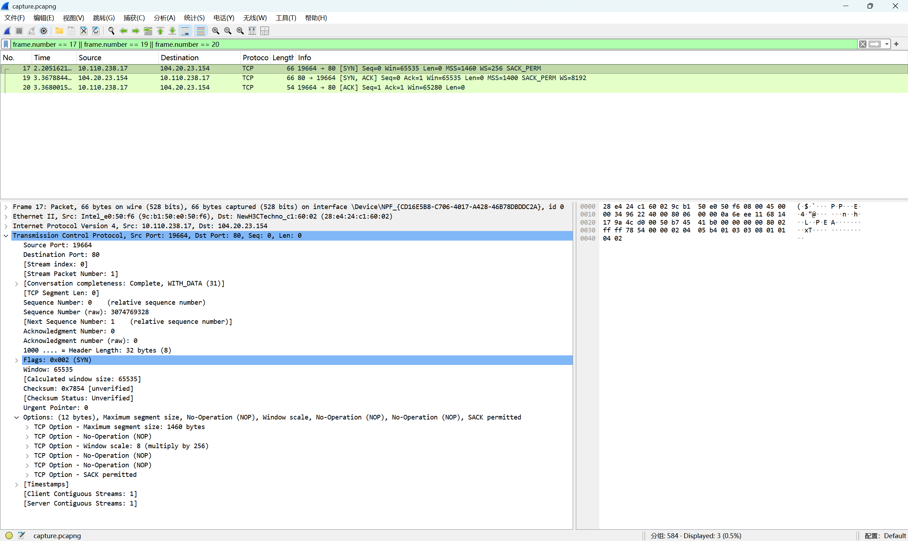
① 证明什么：客户端请求建立一条TCP连接。
② 怎么操作：frame.number == 17，展开TCP及Options；需要上下文用tcp.stream == 0。
③ 字段与字节：10.110.238.17:19664→104.20.23.154:80；Seq0、SYN1；客户端通告MSS1460。
④ 原理与联系：SYN同步初始序号；相对Seq0便于观察，真实初始序号并非必须0。
⑤ 数字计算：SYN占1个序号；对方确认下一期望序号为1。
⑥ 常见误解：客户端MSS约束对方发来的数据段，不等于双向都用同一MSS。
⑦ 老师追问：问：18为什么又是SYN？答：本文件被Wireshark标记SYN重传，握手主线仍17/19/20。
⑧ 自测与答案：SYN携带0 B数据还占序号吗？答：占1。
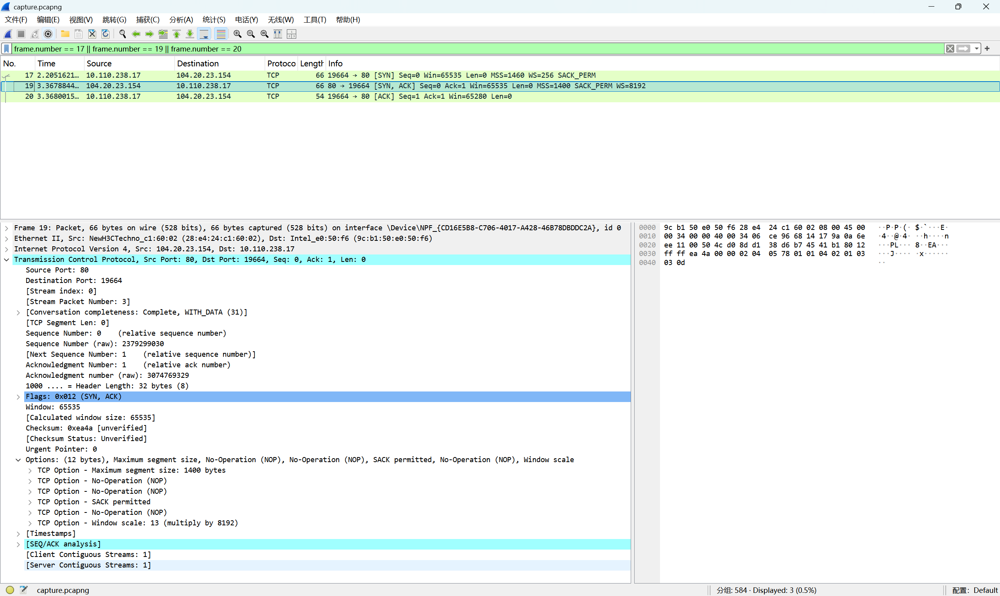
① 证明什么：服务器确认客户端并同步自己的序号。
② 怎么操作：frame.number == 19；展开TCP Flags、Seq、Ack、Options。
③ 字段与字节：104.20.23.154:80→本机19664；Seq0、Ack1；SYN与ACK置位；服务器MSS1400。
④ 原理与联系：两个方向独立维护序号，确认号指向下一期望字节。
⑤ 数字计算：Ack1=客户端Seq0+SYN1；不是网页已传1 B。
⑥ 常见误解：双方MSS可不同；不要用此连接的MSS推断百度段长度。
⑦ 老师追问：问：MSS1400限制哪个方向？答：客户端发向该服务器的数据段。
⑧ 自测与答案：服务器SYN被确认后客户端Ack？答：1。
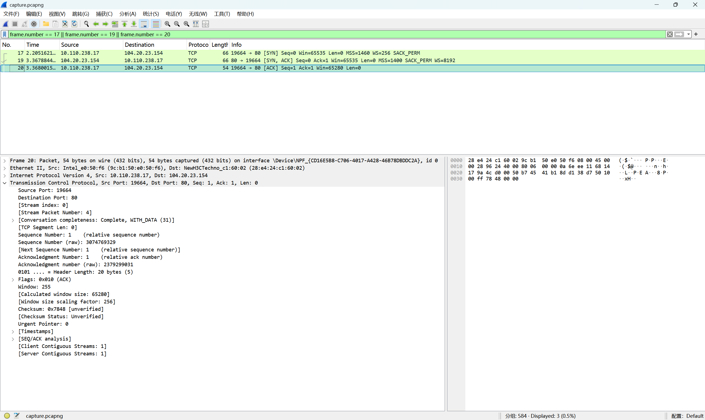
① 证明什么：客户端完成对服务器SYN的确认。
② 怎么操作：frame.number == 20，核对TCP Seq/Ack/Len。
③ 字段与字节：本机19664→服务器80；ACK，Seq1、Ack1、Len0。
④ 原理与联系：第三次握手之后应用数据可以在建立的连接中交换。
⑤ 数字计算：纯ACK无数据且无SYN/FIN，本身不额外消耗序号；下一请求Seq仍为1。
⑥ 常见误解：ACK标志位与Ack数值是不同概念。
⑦ 老师追问：问：TCP怎么区别连接？答：协议和双方IP/端口；stream只是本文件索引。
⑧ 自测与答案：21帧137 B请求结束后下一Seq？答：138。
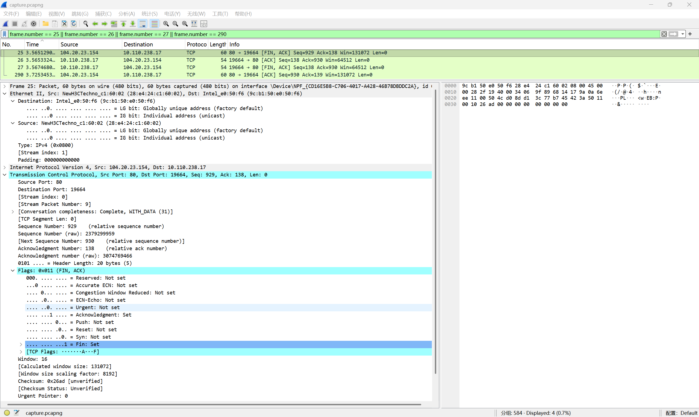
① 证明什么：验证FIN和ACK的序号关系。
② 怎么操作：frame.number == 25 || frame.number == 26 || frame.number == 27 || frame.number == 290；展开Flags。
③ 字段与字节：25服务器FIN Seq929；26客户端Ack930；27客户端FIN Seq138；290服务器Ack139。
④ 原理与联系：每个发送方向分别关闭，FIN占序号；纯确认与关闭可分开。
⑤ 数字计算：929+1=930；138+1=139。
⑥ 常见误解：27→290编号跳跃是夹入其他流，不直接证明丢包。
⑦ 老师追问：问：关闭总要四个包吗？答：不一定，ACK与FIN可合并；此样本确有四帧。
⑧ 自测与答案：帧26确认的是什么？答：服务器FIN。

① 证明什么：观察一段字节流的连续序号。
② 怎么操作：frame.number >= 35 && frame.number <= 37；依次看TCP Seq、Len、Next Seq；属于stream1。
③ 字段与字节：服务器110.242.69.21:80→本机19675；Seq1/1461/2921；Len1460/1460/1171。
④ 原理与联系：序号按字节递增；三段只是完整响应的开头，完整重组见S06。
⑤ 数字计算：1+1460=1461；1461+1460=2921；2921+1171=4092；14+20+20+1460=1514 B帧。
⑥ 常见误解：1514 B帧含Ethernet14 B，IP仍1500 B，不能判定IP分片。
⑦ 老师追问：问：前三段就是整个网页吗？答：不是，579帧重组505段共735723 B。
⑧ 自测与答案：前三段载荷合计？答：4091 B。
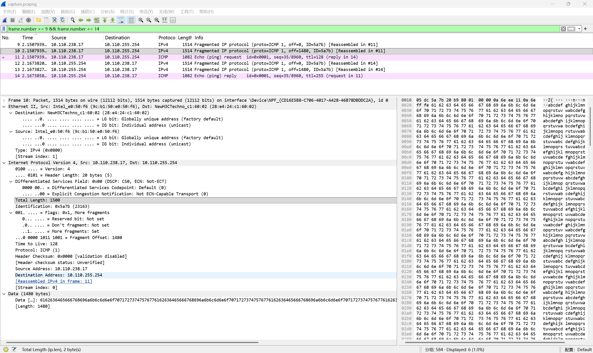
① 证明什么：同一IP数据报被拆为三片。
② 怎么操作：frame.number >= 9 && frame.number <= 11；逐帧查ID、MF、Offset、Total Length；重组看S04。
③ 字段与字节：同方向本机→网关，ID0x5a7b；IP总长1500/1500/1068；偏移字节0/1480/2960；MF1/1/0。
④ 原理与联系：关联分片还要结合源/目的与Protocol，不能只按ID。
⑤ 数字计算：载荷1480+1480+1048=4008；原总长4028；传输三IP片总长4068；额外头40 B。
⑥ 常见误解：TShark ip.frag_offset输出编码单位0/185/370；GUI显示字节0/1480/2960。两者相差8倍。
⑦ 老师追问：问：这是HTTP响应分片？答：不是，是网关ICMP请求。
⑧ 自测与答案：370×8是多少？答：2960 B。
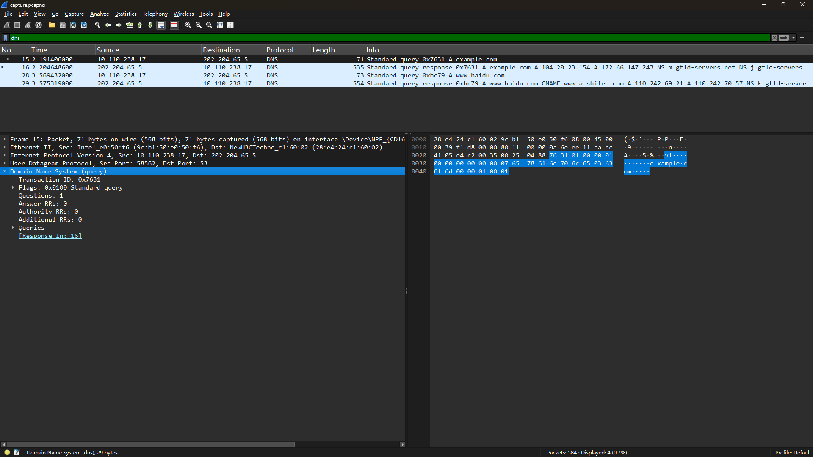
① 证明什么：将域名与本次使用的服务器地址关联。
② 怎么操作：dns；先选15/16，再选28/29；展开Queries、Answers。
③ 字段与字节：15向202.204.65.5查询example.com；16应答含104.20.23.154等A记录；28/29是百度DNS。
④ 原理与联系：A记录给IPv4地址；CNAME给别名，需继续找相应地址记录；DNS与ARP解决不同问题。
⑤ 数字计算：A记录地址值固定4 B；CNAME名称编码长度随域名变化，不能统一当4 B。
⑥ 常见误解：DNS可能命中缓存；不是每个HTTP请求前都会出现DNS包。
⑦ 老师追问：问：域名返回多个IP怎么办？答：本次用104.20.23.154，不能推断始终固定。
⑧ 自测与答案：DNS A与ARP映射分别是什么？答：域名→IPv4，下一跳IPv4→MAC。
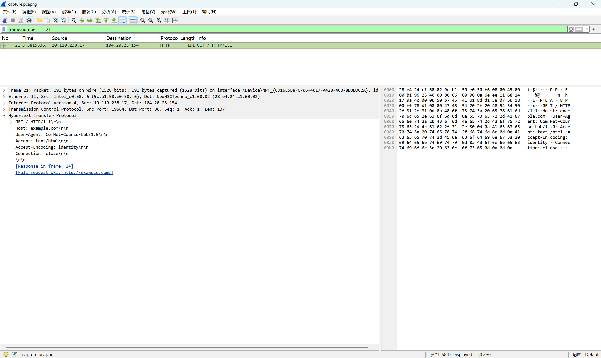
① 证明什么：确定客户端请求哪个网站的资源。
② 怎么操作：http.request && tcp.stream == 0，选21，展开HTTP。
③ 字段与字节：GET / HTTP/1.1；Host example.com；源19664→目标80；137 B TCP载荷。
④ 原理与联系：TCP提供字节流；HTTP请求行与Host表达资源及站点，端口80本身不能替代Host。
⑤ 数字计算：Seq1+Len137=下一Seq138；本帧14+20+20+137=191 B。
⑥ 常见误解：明文HTTP可读不等于HTTPS也可直接读。
⑦ 老师追问：问：斜杠是什么？答：本次请求目标的根路径。
⑧ 自测与答案：为什么需要Host？答：同一IP可以提供多个站点。
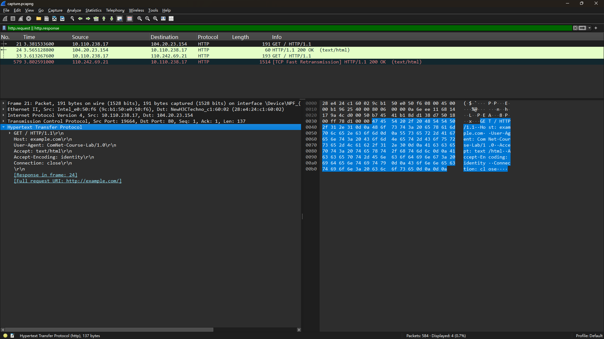
① 证明什么：用同一帧的另一视图交叉检查请求。
② 怎么操作：frame.number == 21；展开HTTP后在Packet Bytes点请求字段。
③ 字段与字节：同样是GET /和Host example.com；不是第二次独立请求。
④ 原理与联系：同一帧跨图复用能讲不同字段，但不能算成两次实验。
⑤ 数字计算：137 B请求仅是应用字节；与928 B响应相加1065 B，见S01。
⑥ 常见误解：截图深浅配色不同不改变样本身份。
⑦ 老师追问：问：两图算两次采样吗？答：不算，都是同一历史帧。
⑧ 自测与答案：这张图与图13同流号？答：stream0。
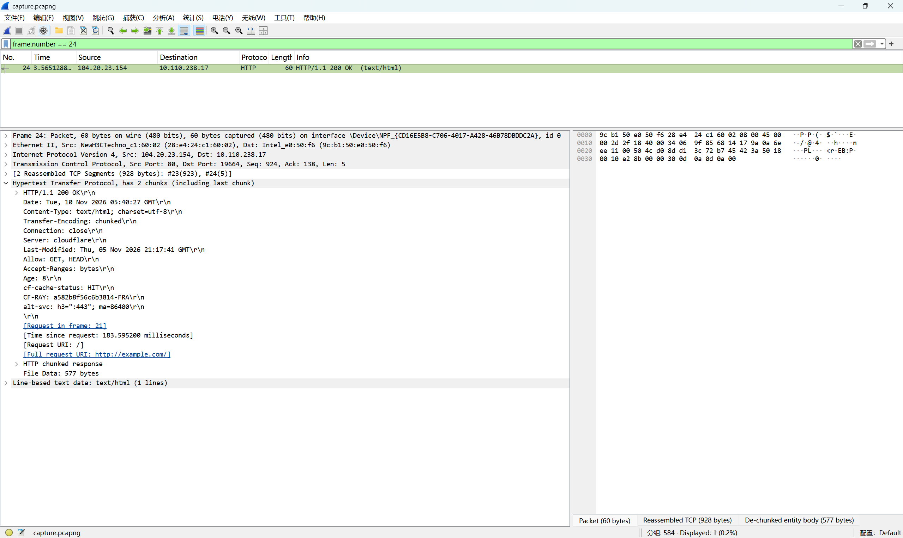
① 证明什么：将200响应与原请求配对。
② 怎么操作：http.response && tcp.stream == 0，选24；展开HTTP及2 Reassembled TCP Segments。
③ 字段与字节：HTTP/1.1 200 OK；Content-Type text/html; charset=utf-8；请求引用21；File Data577 B。
④ 原理与联系：HTTP消息经多段TCP重组；chunked的编码开销、HTTP头和正文不是同一长度。
⑤ 数字计算：TCP响应923+5=928 B；正文577 B；请求观察间隔183.5952 ms。
⑥ 常见误解：183.5952 ms包含处理和传输等因素，不能称纯网络RTT。
⑦ 老师追问：问：帧24 TCP Len5为什么有完整HTTP？答：Wireshark把23/24重组显示。
⑧ 自测与答案：928与577差351 B是什么？答：HTTP头及传输编码开销合计，不是额外正文。
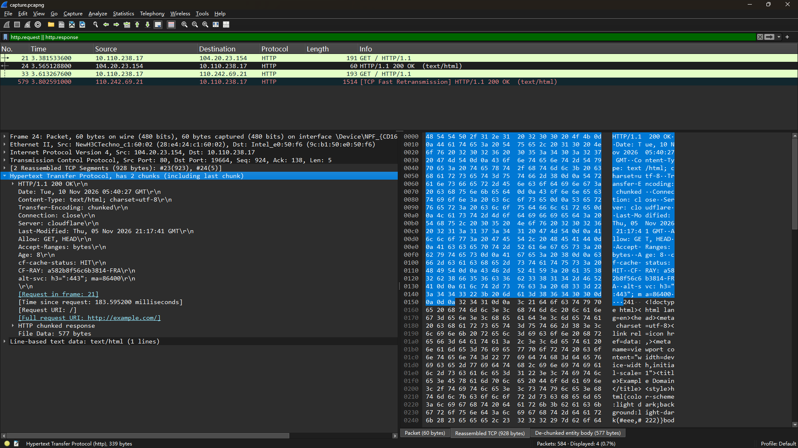
① 证明什么：核对同一响应的重组与时间引用。
② 怎么操作：frame.number == 24；展开HTTP中的Request in frame和Time since request。
③ 字段与字节：同样引用21；TCP重组#23(923)、#24(5)；不是百度579帧。
④ 原理与联系：同一连接的请求与响应引用比只看相邻帧更可靠。
⑤ 数字计算：3.5651288−3.3815336=0.1835952 s。
⑥ 常见误解：不能把网站处理耗时、传播时延、抓包时间合成一个纯RTT结论。
⑦ 老师追问：问：200代表无重传吗？答：它是HTTP成功状态，不说明TCP无重传。
⑧ 自测与答案：同流请求帧号？答：21。
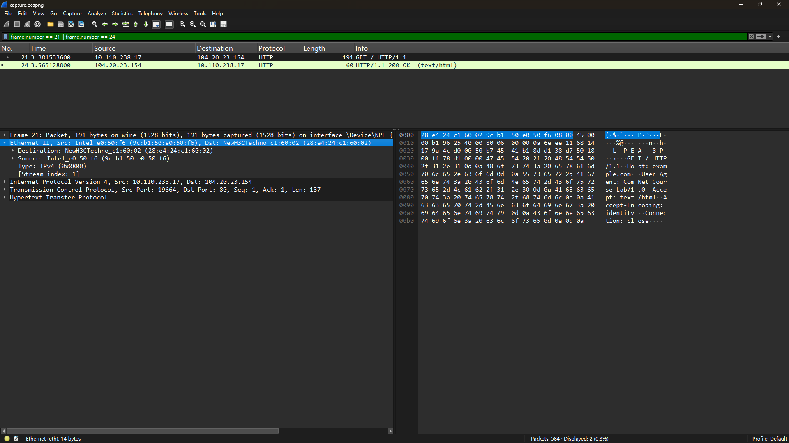
① 证明什么：理解本地这一跳的MAC。
② 怎么操作：frame.number == 21；展开Ethernet II、点击Destination。
③ 字段与字节：源9c:b1:50:e0:50:f6，目的28:e4:24:c1:60:02；Type为IPv4。
④ 原理与联系：目的MAC来自网关ARP映射；跨网络时逐跳重新封装。
⑤ 数字计算：Ethernet II头为6+6+2=14 B；不包括未捕获的FCS。
⑥ 常见误解：WLAN接口呈现Ethernet II不代表抓到完整802.11空口管理帧。
⑦ 老师追问：问：为什么MAC不是网站服务器？答：本地链路接收者是网关。
⑧ 自测与答案：IP目的会因此变成网关吗？答：不会，本帧仍指服务器。
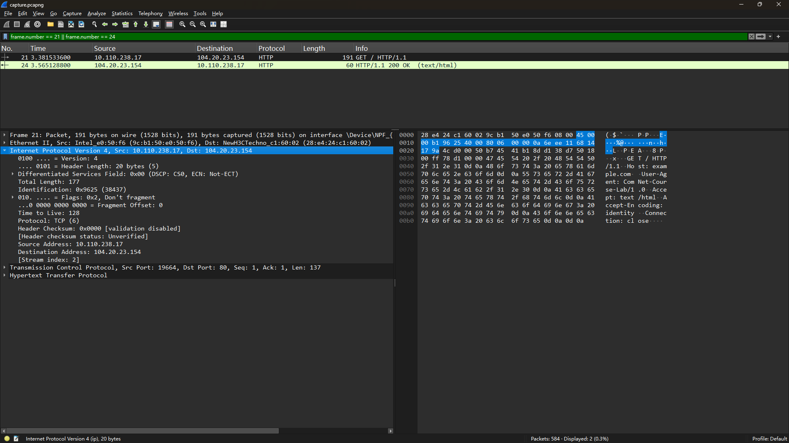
① 证明什么：理解跨网络寻址的IP。
② 怎么操作：frame.number == 21；展开IPv4对照源/目的及Total Length。
③ 字段与字节：10.110.238.17→104.20.23.154；IPv4头20 B；本机观察点尚未见网关外侧NAT。
④ 原理与联系：IP表达网络端点，MAC表达当前跳；二者目的不同是正常封装。
⑤ 数字计算：IP总长20+20+137=177 B；加Ethernet14 B=191 B。
⑥ 常见误解：不能从本机私网抓包证明公网出口地址或NAT映射。
⑦ 老师追问：问：本图证明几台路由器转发？答：不能观察全路径。
⑧ 自测与答案：IPv4总长包含Ethernet吗？答：不包含。
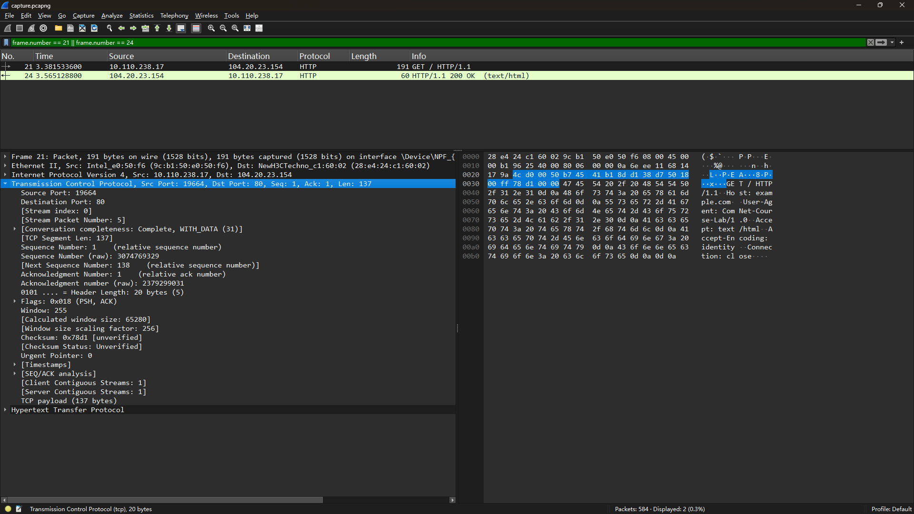
① 证明什么：让主机把字节交给正确应用会话。
② 怎么操作：frame.number == 21；展开TCP核对双方端口、Seq/Ack及载荷。
③ 字段与字节：19664→80，Seq1、Ack1、Len137；属于stream0，与HTTP请求同帧。
④ 原理与联系：封装顺序HTTP→TCP→IPv4→Ethernet；接收按层解码。
⑤ 数字计算：TCP头20 B+137 B数据=157 B IP载荷；再加IP头20 B=177 B。
⑥ 常见误解：端口不是硬件接口，源端口19664不是服务器监听端口。
⑦ 老师追问：问：如何确认四层是同一包？答：保持frame.number == 21，逐层展开。
⑧ 自测与答案：服务器回复时端口如何变化？答：80→19664。
以下6张均为2026-11-16操作历史文件的新截图。S05只作顺序辅助，窗口标签局部截断，不能替代字段树。

① 证明什么：按双向应用内容确认请求与响应属于同一连接。。
② 怎么操作：frame.number == 21 → 选中21 → Analyze → Follow → TCP Stream；范围：tcp.stream == 0，12帧；应用字节流1065 B。
③ 字段与字节：红色客户端GET与蓝色服务器200；底部Entire conversation 1065 bytes、Stream0；ASCII只是一种显示方式。。
④ 原理与联系：GET /、Host: example.com 与 HTTP/1.1 200 OK 同流；137 B 请求+928 B响应=1065 B；补充图13/14；无可见认证字段。
⑤ 数字计算：137+928=1065 B；不含TCP/IP/Ethernet头，不能当成链路总流量。。
⑥ 常见误解：Follow会自动改过滤器；Close保留当前流过滤，Back可恢复原过滤。。
⑦ 老师追问：问：一屏内容来自一个包？答：是重组后的流，跨多个TCP段。。
⑧ 自测与答案：1065与S03的1768相同吗？答：不同，一个是应用字节，一个是链路帧字节合计。。
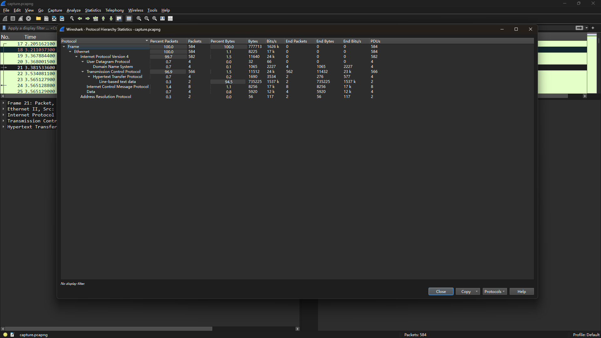
① 证明什么：先看整体样本再按协议或会话下钻。。
② 怎么操作：清空显示过滤器并回车 → Statistics → Protocol Hierarchy；范围：No display filter；584帧。
③ 字段与字节：Frame584、IPv4582、TCP566、DNS4、ARP2；底部No display filter。图中Bytes按GUI协议口径；TShark io,phs字节口径不可直接混用。。
④ 原理与联系：Frame 584；IPv4 582；TCP 566（96.9%）；DNS 4；ARP 2。不同协议层可重复计入同帧；补充软件界面；仅本文件统计。
⑤ 数字计算：566/584≈96.918%=96.9%；不能把各层百分比相加。。
⑥ 常见误解：一个帧能同时算Ethernet/IP/TCP；ICMP显示8不代表只有8个相关IP片，另4片显示Data。。
⑦ 老师追问：问：是否证明校园网96.9%流量是TCP？答：只证明当前584帧样本中的解码比例。。
⑧ 自测与答案：为什么HTTP只有4帧？答：列表显示重组解码位置，不等于只传了4段应用数据。。
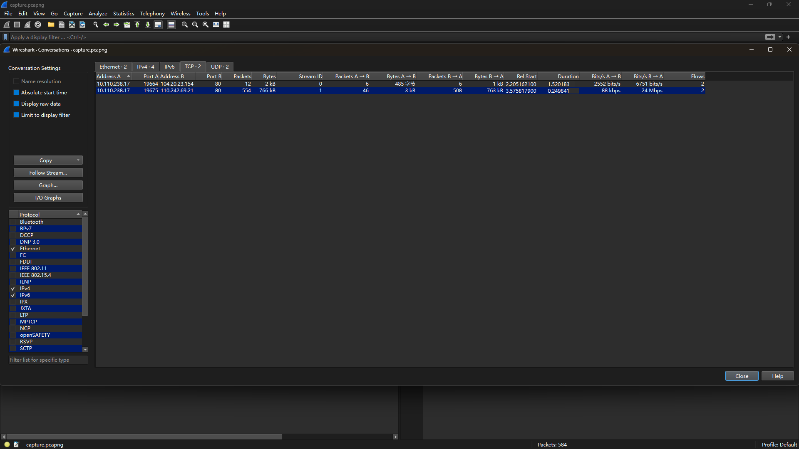
① 证明什么：通过四元组区分两条TCP连接。。
② 怎么操作：清空过滤器 → Statistics → Conversations → TCP；范围：全文件；两个TCP会话。
③ 字段与字节：stream0本机19664↔︎104.20.23.154:80；stream1本机19675↔︎110.242.69.21:80；Duration是会话观察时长。。
④ 原理与联系：stream 0：19664↔︎80，12帧，1.520183 s；stream 1：19675↔︎80，554帧，0.249841 s；确认两样本不同连接；图中Bytes为UI约数。
⑤ 数字计算：stream0总12帧、1768 B（TShark精确值），6+6帧；1.520183 s；UI显示约2 kB。。
⑥ 常见误解：不能把会话时长叫RTT，也不能把UI约2 kB称精确2000 B。。
⑦ 老师追问：问：为何IP对话不等于TCP对话？答：TCP还按端口区分，同IP间可能多连接。。
⑧ 自测与答案：两个会话Packets相加？答：12+554=566。。

① 证明什么：直接看到分片载荷在11帧被分析器重组。。
② 怎么操作：frame.number >= 9 && frame.number <= 11 → 选11 → 展开IPv4、Flags、3 IPv4 Fragments；范围：9/10/11；网关ICMP请求方向。
③ 字段与字节：树列出#9 payload0—1479、#10 1480—2959、#11 2960—4007；Fragment count3、Reassembled IPv4 length4008。。
④ 原理与联系：ID=0x5a7b；末片MF未设置；偏移2960 B；三片1480+1480+1048=4008 B；补充图11；真实3片关联树。
⑤ 数字计算：1480+1480+1048=4008 B；370编码单位×8=2960 B；末片总长1068−20=1048 B。。
⑥ 常见误解：此处是Wireshark在抓包文件上分析重组，不证明所有中间路由器重组。。
⑦ 老师追问：问：MF=0就一定未分片？答：也可能是最后一片，要结合Offset。。
⑧ 自测与答案：最后一个载荷字节索引？答：4007，从0编号。。
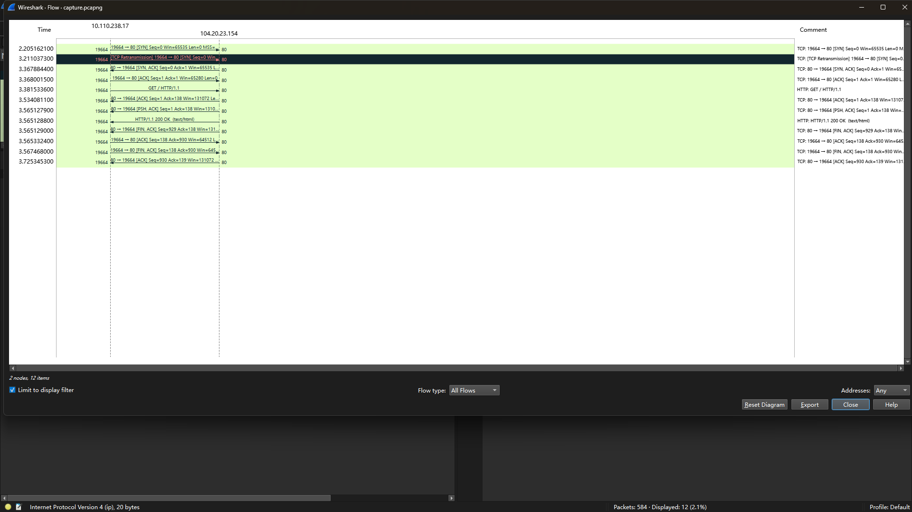
① 证明什么：用方向箭头辅助串联同一连接的顺序。。
② 怎么操作：tcp.stream == 0 → Statistics → Flow Graph；保持 Limit to display filter 勾选；范围：stream 0；2 nodes、12 items。
③ 字段与字节：2 nodes、12 items；Limit to display filter勾选；两端本机与example服务器。SYN重传也保留。。
④ 原理与联系：可见SYN、SYN重传、握手、GET、200及关闭；窄列标签截断，不能逐行读完整参数；仅学习版辅助，不列入答辩必讲，详细参数以帧表为准。
⑤ 数字计算：12个图项对应stream0的12个捕获帧；含控制帧，不等于12次HTTP请求。。
⑥ 常见误解：标签截断且字体小；仅看方向和顺序，精确Seq/Len回主窗口核对。。
⑦ 老师追问：问：纵向位置等于等比例时间吗？答：用左侧实际时间值，不能凭行间距测时延。。
⑧ 自测与答案：GET之前除三次握手还多了什么？答：本文件中的一次SYN重传。。
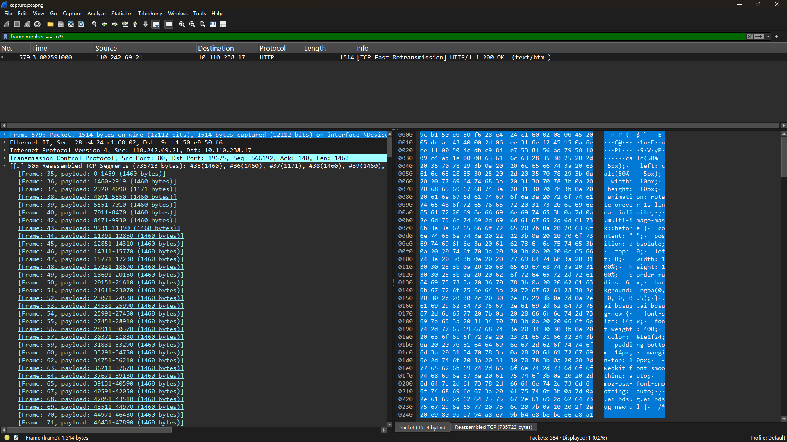
① 证明什么：验证35—37确属579帧重组，补齐旧稿待验证线索。。
② 怎么操作：frame.number == 579 → 选579 → 折叠其他树 → 展开505 Reassembled TCP Segments；范围：stream 1；579及35/36/37等505段。
③ 字段与字节：树根505 Reassembled TCP Segments (735723 bytes)；首三项为35/36/37；579列表有Fast Retransmission标记。。
④ 原理与联系：735723 B；35载荷0—1459，36为1460—2919，37为2920—4090；非只由三段组成；补充图10；列表的Fast Retransmission是分析标记，不能单凭其断言物理丢包。
⑤ 数字计算：前三段1460+1460+1171=4091 B，仅是735723 B的开头；该长度含HTTP响应头，不等于纯网页正文。。
⑥ 常见误解：505是参与重组的段数，不是stream1总帧数554，也不表示579只由前三段组成。。
⑦ 老师追问：问：如何确认同流？答：TShark -2核验35/36/37/579的tcp.stream均1，前三帧tcp.reassembled_in=579。。
⑧ 自测与答案：HTTP请求是哪帧？答：百度33，不能答example.com的21。。
| 目标 | 显示过滤器 | 要看的证据 |
|---|---|---|
| ARP | arp |
1/2 的请求和应答 |
| ICMP | icmp |
3/4 的 Type、Code、ID、Seq |
| TCP 三次握手 | `frame.number == 17 | |
| 单条 Web TCP 连接 | tcp.stream == 0 |
含建连、HTTP、释放的全部 TCP 帧 |
| TCP 释放 | `frame.number == 25 | |
| TCP 分段 | frame.number >= 35 && frame.number <= 37 |
Seq 和 Len |
| IP 分片 | frame.number >= 9 && frame.number <= 14 |
ID、MF、Offset |
| 所有分片候选 | `ip.flags.mf == 1 | |
| DNS | dns |
15/16 和 28/29 |
| HTTP 请求/响应 | `http.request | |
| 跨层分析 | frame.number == 21 |
Ethernet II / IPv4 / TCP / HTTP |
帧号、tcp.stream仅在本文件有效。导出过滤后文件会重新编号，不能沿用本教程编号。
[1] Wireshark Foundation. Wireshark User's Guide.
[2] Wireshark Foundation. Wireshark Display Filter Syntax.
[3] D. Plummer. RFC 826: An Ethernet Address Resolution Protocol.
[4] J. Postel. RFC 792: Internet Control Message Protocol.
[5] J. Postel. RFC 791: Internet Protocol.
[6] W. Eddy (Ed.). RFC 9293: Transmission Control Protocol.
[7] P. Mockapetris. RFC 1035: Domain Names—Implementation and Specification.
[8] R. Fielding et al. RFC 9110: HTTP Semantics.
[9] R. Fielding et al. RFC 9112: HTTP/1.1.
参考文献用于协议规则和软件功能的标准定义；实际帧号和测量值来自历史截图以及本轮只读核验的权威抓包（详见登记表），不由 RFC 证明。